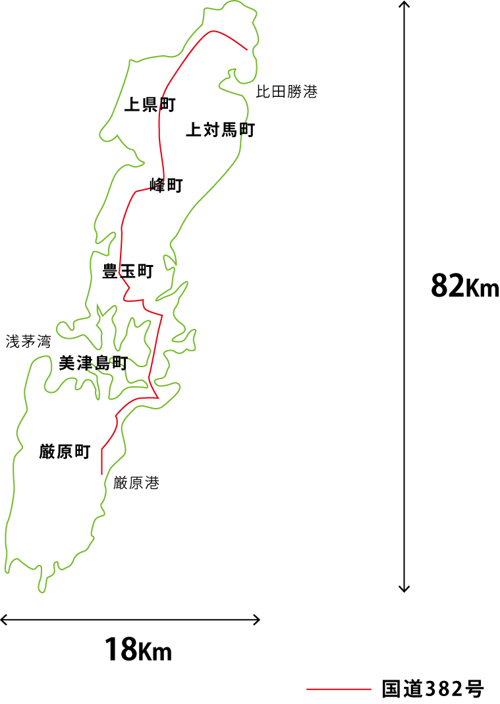

対馬についての予習
対馬の概要

長崎県対馬市(2004年に6町合併で発足)
人口：31,560人(2017年4月末現在)※住民基本台帳月報
65歳以上の人口割合：29.5%(2010年)
島の数：100以上
総面積：約700キロ平米 日本で10番目に大きな島
おもな産業：林業(対馬ひのき、乾しいたけ)、水産業(イカ、真珠やマグロの養殖)、観光業
観光客:国内観光・ビジネス 16.2万人（2014年） ※対馬市地域交通網形成計画
外国人 21.5万人(2015年) ※法務省出入国管理統計
九州までの距離：132キロ
韓国までの距離：49.5キロ
たしかに宝の山だった ～実行委員会対馬視察日記～
3月2日から4日にかけて第2回市民共創知研究会実行委員5名で対馬の視察、あいさつに行ってきました。ここではその時の様子を旅行記形式でお届けします。対馬行きを検討されているみなさんの参考になれば幸いです。
今回は東京、名古屋から福岡経由の空路、博多港から海路という二つの方法で島に向かいました。長崎から空路という手段もありますが、飛行機が40名の乗りと一回り小さくなります。 また、博多港を午前0時過ぎに出航するフェリーでゆったり来るという方法もあります。 福岡からの飛行機は便によって定員70名ほどのプロペラ機になることがあります。 低空の雲の間を抜け、海を見下ろしながらの飛行は旅の気分を盛り上げます。
博多駅から博多港まではF乗り場から頻繁にバスが出ています。
ジェットフォイルは壱岐経由で対馬に向かいます。万が一に備えてシートベルトは欠かせません。
対馬空港は二階建ての小さな建物。ここから厳原市内まではタクシー、バスで30分くらいです。
厳原港は厳原の市街地からすぐ。歩いても行ける距離です。
視察のコーディネーター、島おこし協働隊の佐藤さんのオフィスが入る「ふれあい処つしま」。対馬の歴史や自然に関する展示は見ごたえがあります。
まずは腹ごしらえ。ふれあい処内にある「ふれあい食堂憩い」で郷土料理をいただきます。まずはいりやきそば。具を炒ってから煮込む対馬の郷土料理「いりやき」にそばを入れた一品。
こちらは国境の島ならではのご当地料理「対馬とんちゃん」。ニンニクなどがよく効いたタレに付け込んだ豚肉を焼いたものです。
この真っ黒な麺は「ろくべえ」。さつまいもを発酵させ、でんぷんだけを取り出してつくります。タピオカのような独特の食感。
昼食後に観光物産協会での打ち合わせを経て、日本最古のドック、お船江へ。江戸時代初期に和船の修理をするためにつくられました。
こちらは数時間後にふたたび訪れた際のお船江。潮の満ち引きを利用して船の運搬などが行われていたと考えられます。干潮時は歩いて散策できます。
お船江から南下、フィールドワーク先の「ツシマヤマネコ野生順化ステーション」へ。高い柵で囲われたエリアが広がります。
ここは島外の動物園で生まれたツシマヤマネコを自然に返すための施設。モニターで各ケージの様子を観察することができます。
こちらは送られてきたヤマネコの体調管理をする施設。医務室やエサを管理する部屋があります。
今はイエネコを試験導入して安全に管理する方法を検討しているそうです。
セッション会場候補の下見を経て、ホテルにチェックイン。夕食に向かいます。
対馬に来たらぜひ味わってほしいのが海鮮。これは新鮮な鯖の刺身。
サザエのお造りも都会では考えられない値段で提供されています。
あわせるのは島唯一の蔵、河内酒造で醸された麦米焼酎「やまねこ」。水のように飲みやすく、海鮮によくあいます。
二日目のスタートは昨日味わった郷土料理「ろくべえ」を通して島の歴史や地域について考える総合学習を行っている小綱小学校（※こづな小学校）へ。途中万関という明治時代に開削した運河をわたり、そのわきの高台にある万関展望台に立ち寄ります。
対馬はもともと一つの島でしたが、東西を船で行き来するために海軍によって運河が作られました。ここからの眺めは絶景です。
小網小学校につきました。
耕作可能地が少ない対馬で、貴重なサツマイモを使い切るための工夫から生まれた「ろくべえ」。これは芋から取り出したでんぷんを丸めた「せんだんご」です。
学校裏の畑を使って、蔓を植えるところからつくります。地域の方が積極的に関わって、「ろくべえ」をつくる喜びを共有します。

小学校を後にして和多都美(わたづみ)神社へ。竜宮伝説がある海の神を祭った神社です。
厳島神社のように鳥居が海の中にある美しい神社です。
訪れる多くの観光客は韓国からいらっしゃっていました。音声案内や掲示板も日本語とハングルが同じ扱いになっています。観光系のフィールドワークとしていろいろ気になるところが出てきそうです。
和多都美神社に行く途中。旧豊玉町の丘の上に宗教施設のような異様な建物が立っています。
これは独自の建築理論を展開した建築家渡辺豊和氏(1938- )の作品で豊玉地区公民館(対馬市公会堂)です。 その土地土地の神話や歴史を強く意識して建築を設計することで知られている氏の建築らしく、豊玉姫の伝説を受けての作品となっています。
お昼ご飯はあなご亭にて対馬名産「黄金あなご」をいただきます。
大きな天ぷら。この大きさは築地で安値になってしまうため、独自のブランド化を考えたそうです。
対馬のあなごは江戸前のものよりも深海、海流のあるところで育つため、泥臭くなく、大きいのが特徴です。
海産物をそのまま出荷するのではなく、ブランド化したり、加工品にして出荷するために数々の工夫をされています。このあたりも水産業に関するフィールドワークとして課題を共有できそうです。
対馬市役所での打ち合わせを終えて、市役所裏の清水山城にのぼります。
古代山城が有名な対馬ですが、清水山城はそれよりもずっと後の時代、豊臣秀吉が朝鮮出兵を行う際に兵站として築城したものです。
三の丸からの眺めは厳原港を中心に市街中心部を見渡すことができます。
すこし汗をかいて、頂上まで登ると対馬高校や対馬空港のほうまで眺められる絶景が。
山を下り、厳原城下をめぐると狭い道路が入り組んだまちになっています。火事が多かったために築かれた江戸時代の防火壁が残ります。 街中には免税店が数件あり、韓国人観光客の方が買い物をされていました。こんにゃくゼリーが大人気というのにはおどろき。

二日目最後の視察は、セッション会場として検討している宿坊西山寺です。西山寺は江戸時代に朝鮮との外交機関「以酊庵」（いていあん）が置かれていた由緒ある臨済宗の寺。 こちらの本堂と座禅堂をお借りしてセッションを構成できないかと考えています。
電源の数、机の数、寸法などを丁寧に確認していきます。宿坊もついているので家族連れの方などはこちらに滞在されるのがいいかもしれません。
夕食はイブニングセッションの会場の候補になっている海風商事へ。海産物加工業者が加工場の脇にBBQができる空間をつくり、地元の食材を味わってもらおうと営業しています。
名物はヒオウギ貝。小さなホタテのようですが、味が凝縮されていて水っぽくありません。
サザエやカキも大量に提供されます。
BBQだけのはすですが、刺身などサービスで提供いただきました。どれも絶品。
対馬の海鮮を豪快に、そしてガッツリと味わうことができます。
最終日は観光に関するフィールドワーク設計のため、金田城(かなたのき)に向かいます。
普通車が離合するにも難しいくらいの山道を駆け上がってたどり着いたのが城山登山口。
明治時代に砲台を築くため、馬が用いられました。馬が上れる勾配ということでしっかりとした登山道が整備されています。
登り始めて少ししたら最初のビューポイント。湖のようですが実はリアス式に入り組んだ浅茅湾なので海がここまで来ているのです。
写真を撮ろうとして気づきましたが、このあたり電波が非常に弱く、携帯電話が利用できない場所も多そうです。観光情報の提供といった時の課題が見え隠れします。
山頂には明治時代に築かれた城山砲台の跡が残っています。測量を行った設備なども残っていて、落書きもない状態で手つかずのままといった感じです。

こちらからは晴れれば韓国も見えると言います。眼下に広がる浅茅湾では真珠の養殖やシーカヤックが盛んです。
山頂までは50分、整備された登山道ですが歩きやすい靴で来る必要がありそうです。

金田城は667年(奈良時代！)に築かれた朝鮮式山城で防人が国境防備にあたりました。
山全体が高い石塁でかこわれていて、来襲する敵を迎え撃つ構造になっています。

行きとは違った道で降りていくと視界が一気に開けます。これが二の城戸と呼ばれる海から物資を運びこむための門の跡です。頑丈に石が積み上げられています。
さらにそこから北上すると一の城戸があり、それを下ると大吉戸神社があります。海に対してひらいた美しい神社です。
登山口に向けて今度は南下します。そこであらわれるのが三の城戸です。写真に映っている人と比べて壁の大きさを感じてみてください。

連なる壁を間近に見上げることができるスポットもありますが、まだ観光地化には程遠い状況です。
ここまでで午前が終了。ジェットフォイルで帰る人はお昼に出航なのでここで対馬の旅は終了となります。
飛行機組は昼食後に小茂田浜神社へ。こちらも雨天時金田城に登れないことを想定しての視察です。

元寇は神風が吹いて日本が一方的に勝ったと思われていますが、対馬・壱岐は元、高句麗軍に占領され、住民に大きな被害が出ました。その上陸地点に建てられたのが小茂田浜神社です。
当時はもう少し海岸線が内陸寄りだったそうですが、この海に500艘の船と25,000の軍勢が押し寄せたというのは信じられません。

小茂田浜神社からすこし離れたところに対馬独特の建物があります。それが高床式倉庫、石屋根です。
平民が瓦を使うことが許されていなかった時代に、強風に耐えるため、薄い石を屋根に載せ重ねていきました。
特にここ椎根集落に残されているものは数が多く、状態がいいとされます。
といったところで飛行機の時間が迫ってきました。
いったん厳原に戻ってお土産を買います。
干物にはちみつ、藻塩など自然の恵みを活かした特産品が並ぶ中、なんといっても忘れてはいけないのが「かすまき」です。カステラであんこを巻くという甘いモノ重ねは砂糖が貴重だった時代の名残だそうです。
まだまだ島の北部には行けていませんし(ヤマネコセンターは北部にあります)、歴史を知るためのポイントもいくつか残っています。フィールドワークの設計に向けて、いろいろな方と打ち合わせをさせていただき、その都度対馬の魅力と、抱えている問題について教えていただきました。ものすごく濃い3日間を終えて感じたのは、
「この島には宝がたくさんある。それをどういう風に届けていくか。」
ということです。それ、ひとつふたつ宝が眠っているのではなく、ものすごく多くの宝が眠っています。島外から参加する技術者や研究者のみなさん。
どうか対馬の課題を解決するためにご参加ください。
また、第1回と併せて、地域の問題を地域外の人たちを交えながら解決していこうと考えている方がいらっしゃいましたら、その方法の一つとしてこの研究会を活用いただければと思います。
もっと気楽に、「対馬に行ったことがない！」という方には、濃密な対馬体験をしていただければ幸いです。お待ちしております。
主要参加者紹介

名古屋工業大学
白松 俊
所属
名古屋工業大学 大学院工学研究科 情報工学専攻・准教授
Code for Nagoya・名誉代表
専門分野
シビックテック, オープンデータ, 自然言語処理, 市民協働支援, 即興合奏支援
専門分野説明
シビックテックとは、市民と技術者の協働を通じ、社会課題にITを活用する取り組みです。この研究会と親和性の高いオープンイノベーション（組織を超えた協働による技術革新）に繋がる技術の創出を目指しています。
研究会参加者に向けてメッセージ
前回の遠野では、飲み会の軽いノリから、白松研の学生と農家民宿の経営者の方が鍬動作分析の研究プロジェクトをスタートさせました。
次回の対馬では、世の中の社会課題に関する背景情報をうまく共有するためのシステムの試作について話題提供する予定です。
ぜひ、参加者の皆様との対話を通じて、我々が開発中の「技術シーズ」をうまく活かせる仕組みを考えていきたいと考えております！

東京農工大学
藤田 桂英
所属
東京農工大学 工学研究院 准教授
専門分野
人工知能 マルチエージェント 自動交渉 自然言語処理
専門分野説明
たくさんの人工知能が強調する場合にどのような仕組みが有効か、人工知能同士が対立した場合に自動的に交渉するにはどうすればよいかを研究しています。さらに、それらを社会実装するための仕組みや人間の集団の意思決定を支援するシステムの研究開発をしています。
研究会参加者に向けてメッセージ
研究会に参加することで、人工知能、マルチエージェントシステム、自然言語処理などの研究者がもつ最新技術と対馬など様々な地域にある諸問題がマッチし、新しいプロジェクトが始まるきっかけ作りになると考えております。
この研究会は、フィールドワークや研究発表、対話を通じてその地域が抱える問題を肌で感じられるだけではなく、地域問題と最新技術がマッチした場合は、それをプロジェクトとして継続させる仕組みも準備しています。
まずは、第2回研究会に参加して、たくさんの人や課題に触れ合い、新しい出会いを体験してください。
関連書籍
宮本常一『忘れられた日本人』
岩波書店 1984年
たかぎ七彦『アンゴルモア ～元寇合戦記』
フィールドワークで金田城を訪れる方は読んでおくと感動が倍増します。
司馬遼太郎『街道をゆく 13 対馬・壱岐の道』
佐々木俊尚 著『そして暮らしは協同体になる』
アノニマスタジオ 2016年
清水 博、三輪 敬之、久米 是志、三宅 美博 著『場と共創」
NTT出版 2000年
その流派のひとつが，一冊目の『場と共創』．
身体と場を介したコミュニケーションと，それによって生じる共創について述べた本です．読み応えがありますが，読んでおいて損はないように思います
上田 完次、黒田 あゆみ 著『共創とは何か』
社会的なジレンマを超えるための共創的意思決定の理論を探った本ですが，理論だけでなく，実世界のリサイクル問題を対象とした枠組みの提案まで行っています．
シンポジウムの内容を本にしたようで，きちんとまとまっているというよりはアイディアが散りばめられているといった印象の本です．
静岡大学
福田直樹
所属
静岡大学 学術院情報学領域 准教授
専門分野
オントロジー 知識表現と推論 マルチエージェント
専門分野説明
社会における種々の「概念」をどのようにコンピューターに理解可能な形にするか、それらをどう知識として扱うか、それを持った人工知能が複数集まったときにどうなるのかを研究しています。
研究会参加者に向けてメッセージ
わたしたちの社会や生活にある様々なことをどのように概念としてまとめられるかという議論は、古くはアリストテレスの時代にさかのぼる哲学の分野でも研究されてきました。
わたしたちが日々考え議論し考えを深めていく過程から、その骨格となるような大切な部分を上手に取り出して、 それを人工知能技術などもうまく使って将来の私たちの生活や議論そのものにも活用していく方法を、うまく組み立てて広めていければと考えています。